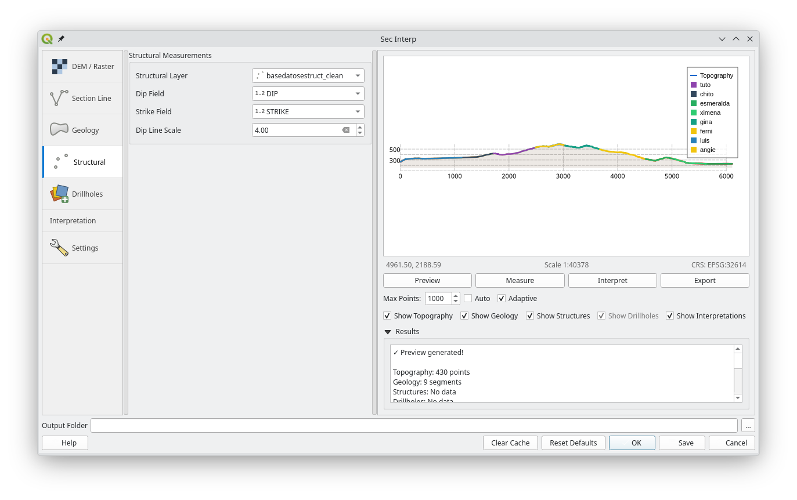
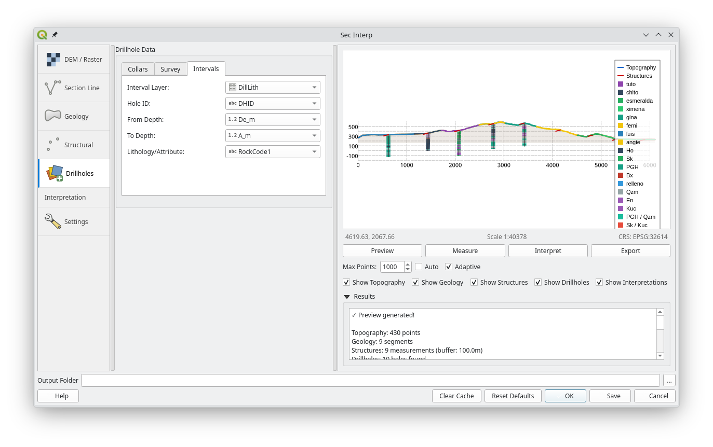
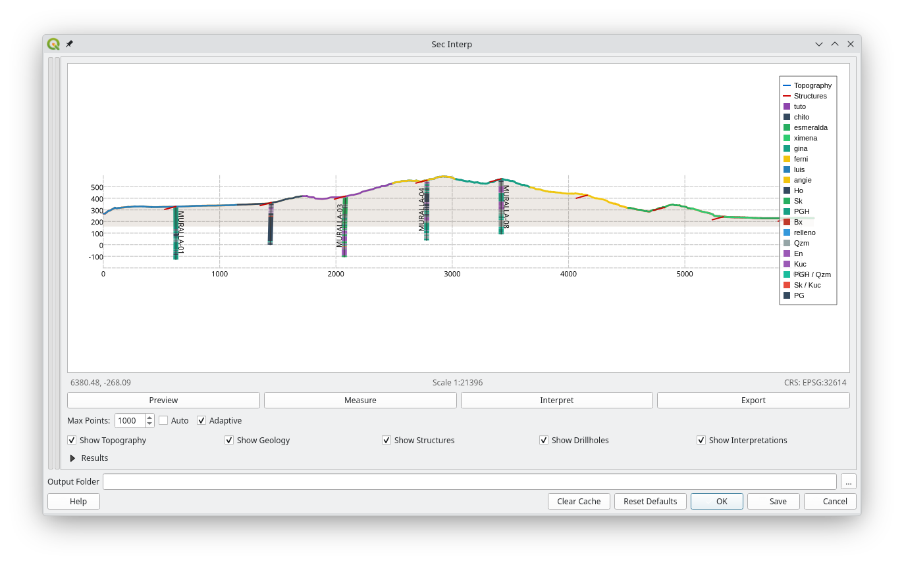

SecInterp User Guide
1. Introduction
Welcome to the SecInterp plugin! This guide will help you get started with creating geological cross-sections from your QGIS layers.
SecInterp allows you to:
Create a topographic profile from a Digital Elevation Model (DEM).
Project geological units from a polygon layer onto the profile.
Project structural measurements (e.g., dip and strike) onto the profile.
Project drillhole traces and geological intervals (sondajes) onto the section.
Interpretation Tool: Digitize geological interpretations directly on the section with smart snapping.
3D Export (PolygonZ): Export your 2D interpretations as valid 3D Shapefiles.
i18n Support: Core interface available in 10 languages (English, Spanish, French, German, Italian, Portuguese, Russian, Chinese, Hindi, Japanese).
View an interactive preview with level-of-detail (LOD) optimization.
Measure distances and gradients with automatic snapping to vertices.
2. The Main Window
The SecInterp dialog is divided into three main areas:
Sidebar Navigation (Left): Navigate between different modules: DEM, Drillholes, Geology, Structure, Settings, and Help.
Configuration Page (Center): Where you configure the parameters for the selected module.
Preview Panel (Right): An interactive canvas showing your cross-section in real-time.
 The consolidated v2.9.0 Main Window with Sidebar navigation.
The consolidated v2.9.0 Main Window with Sidebar navigation.
3. Step-by-Step Tutorial: Creating a Profile
Step 1: Digital Elevation Model (DEM)
Navigate to the DEM page in the sidebar.
Raster Layer: Select your Digital Elevation Model (Mandatory).
Band: Select the band containing the elevation values (Mandatory).
Resolution: Calculated automatically based on the DEM resolution.
Scale 1:1: Calculated automatically based on the DEM resolution.
Vert. Exag: Adjust if you want to emphasize topography (e.g., 2.0x).
 Digital Elevation Model configuration.
Digital Elevation Model configuration.
Step 2: Define Section Line
Navigate to the Section Line page.
Section Layer: Select the vector line layer representing your section traces (Mandatory).
Buffer Dist. (m): Set a buffer distance (e.g., 50m) to capture data around the line (Mandatory).
Important: The line must be single line (not multipart, only P1 and P2) in order to calculate 3d section export.
 Section Line selection and buffer configuration.
Section Line selection and buffer configuration.
 Profile DEM Section Preview.
Profile DEM Section Preview.
Step 3: Adding Geological Data
Navigate to the Geology page.
Outcrop Layer: Select the polygon layer containing your surface geology (optional).
Name Field: Choose the field containing the unit codes or names (Mandatory if Outcrop Layer is selected).
 Geology configuration.
Geology configuration.
 Geology Section Preview.
Geology Section Preview.
Step 4: Adding Structural Data
Navigate to the Structural page.
Structural Layer: Select the polygon layer containing your dip measurements (optional).
Dip Field: Choose the field containing the dip values (Mandatory if Structural Layer is selected).
Strike Field: Choose the field containing the strike values (Mandatory if Structural Layer is selected).
Dip Line Scale: Adjust the scale of the dip lines (e.g., 1.0).
 Structural configuration.
 Structural Section Preview.
Structural Section Preview.
Step 5: Adding Drillhole Data
The Drillholes page allows you to project borehole data onto the section (optional). This page is divided into three sub-tabs:
1. Collars Tab
Configures the location of drillhole collars (start points).
Collar Layer: Point layer with hole locations (optional).
Use Layer Geometry For Coordinates: Keep checked to use the point layer’s geometry for X/Y coordinates (Optional if Collar Layer is selected).
Hole ID: Unique identifier for each drillhole (Mandatory if Collar Layer is selected).
East (X): Optional field for collar X coordinate (if not using point layer geometry).
North (Y): Optional field for collar Y coordinate (if not using point layer geometry).
Elevation (Z): Optional field for collar elevation (if not using DEM).
Total Depth: Optional field for maximum depth.
 Drillhole Collars configuration.
Drillhole Collars configuration.
2. Survey Tab
Configures downhole survey data (deviation).
Survey Layer: Table or layer with survey measurements (Mandatory if Collar Layer is selected).
Hole ID: Field linking to the Collar ID (Mandatory if Survey Layer is selected).
Depth: Distance down the hole (Mandatory if Survey Layer is selected).
Azimuth: Direction (0-360) (Mandatory if Survey Layer is selected).
Inclination: Dip (-90 to 90) (Mandatory if Survey Layer is selected).
 Drillhole Survey configuration.
Drillhole Survey configuration.
3. Intervals Tab
Configures geological or attribute intervals.
Interval Layer: Table or layer with logging data (optional).
Hole ID: Field linking to the Collar ID (Mandatory if Interval Layer is selected).
From / To: Depth ranges for each interval (Mandatory if Interval Layer is selected).
Lithology: Field containing the rock type or attribute to visualize (Mandatory if Interval Layer is selected).
 Drillhole Intervals configuration.
Drillhole Intervals configuration.
Step 6: Generate Preview
Click the Preview button (bottom right).
The section will render in the right-hand panel. Use the mouse wheel to zoom and drag to pan.
Use the Show Checkboxes to toggle visibility of topography, geology, structures, drillholes and interpretation polygons.
 Section Preview with all layers enabled.
 Section Preview with all panels collapsed.
4. Advanced Features (v3.0.0)
4.1 Interpretation Tool (Drawing)
The new Interpretation Tool allows you to draw geological polygons directly on the profile section.
Enable the tool by clicking the Interpret button in the preview toolbar.
Drawing: Left-click to add vertices.
Snapping: The cursor will automatically snap to:
Topography surface.
Drillhole contacts.
Existing interpretation vertices.
Undo: Right-click to remove the last vertex.
Finalize: Double-click (or press Enter) to close the polygon.
Properties: A dialog will appear to set the Lithology, Formation, and Color of the new polygon.
 Digitizing a new geological unit using the Interpretation Tool.
Digitizing a new geological unit using the Interpretation Tool.
 Digitizing a new geological unit using the Interpretation Tool.
Digitizing a new geological unit using the Interpretation Tool.
 Digitizing a new geological unit using the Interpretation Tool.
Digitizing a new geological unit using the Interpretation Tool.
4.2 Attribute Inheritance
When you digitize a new interpretation polygon, SecInterp attempts to automatically inherit attributes from underlying data:
Geology Overlap: If the new polygon overlaps with a projected geological outcrop, it will pre-fill the name and units.
Drillhole Proximity: If the polygon starts or ends near a drillhole interval, it will inherit the lithology/rock unit from that interval (e.g., “Andesite”, “Tuff”).
Manual override: You can always manualy change the inherited color or name in the properties dialog.
4.3 Exporting to 3D (PolygonZ)
SecInterp now bridges the gap between 2D sections and 3D modeling. This feature allows you to export your 2D interpretations as real 3D objects.
Workflow:
Go to the Advanced tab in the Settings tab and check “Enable 3D Interpretation Export”.
Use the Save button (not Export) to generate your data.
The plugin will create a PolygonZ Shapefile in your output folder.
Every vertex of your interpretation is projected into real-world 3D coordinates based on the section plane and surface elevation.
Note: This feature is now standard and available to all users.
4.3 Settings Page
The Settings page manages export configurations and advanced features. It is organized into three sub-tabs:
1. Default Tab (Export Selection)
Control exactly what gets generated when you click Save.
Topographic Profile: Exports the surface line (CSV/SHP).
Geological Profile: Exports projected contacts (CSV/SHP).
Structural Data: Exports projected structural measurements (CSV/SHP).
Drillhole Data: Exports traces (
LineStringZ) and interval cylinders (PolygonZ) as 3D Shapefiles.Interpretations (2D): Exports your drawn polygons (SHP).
 Default settings showing Export Selection.
Default settings showing Export Selection.
2. Advanced Tab
Enable 3D Interpretation Export: Toggles the generation of PolygonZ Shapefiles for your interpretations. This creates true 3D geometries based on the section plane.
 Advanced settings with 3D Export feature.
Advanced settings with 3D Export feature.
3. Plugin Information Tab
Displays version information, credits, and contact details for SecInterp.
 Plugin Information.
Plugin Information.
5. Preview Panel & Tools
The right-hand panel acts as an interactive canvas for your cross-section. It includes a toolbar and specific controls to manage visualization and performance.
5.2 Visualization Controls (LOD)
These settings optimize performance for high-resolution datasets:
Max Points: Manually limits the number of vertices rendered for profile lines. Lower values improve zoom/pan speed.
Auto: When checked, the plugin automatically calculates the optimal
Max Pointsbased on your current window size and resolution.Adaptive: Enables intelligent sampling algorithm. It preserves key details in complex areas (steep topography, folds) while simplifying flat or linear sections.
5.3 Layer Visibility
Use the Show ** checkboxes to toggle specific data layers on or off without reloading data:
Show Topography: The topographic profile line derived from the DEM.
Show Geology: Projected geological contacts from surface mapping.
Show Structures: Structural measurements (dip/strike) projected onto the plane.
Show Drillholes: Borehole traces and geological interval cylinders.
Show Interpretations: Polygons and units digitized by the user.
5.4 Using the Tools
Measure Tool
Snap-to-Vertex: Measurements automatically anchor to real data points (DEM or Drillholes).
Multi-Segment: Click multiple times to measure a polyline path.
Result Panel: Displays Total Distance (3D), Horizontal Distance, and Vertical Delta.
 Figure 7: Measuring distance along a drillhole trace.
Figure 7: Measuring distance along a drillhole trace.
Interpretation Tool
Draw: Left-click to add vertices for a new geological unit.
Edit: Vertices snap to existing lines to ensure topological consistency.
Finish: Double-click to close the polygon and assign attributes (Lithology, Formation).
6. Closing & Saving
It is important to understand the difference between Save and OK: